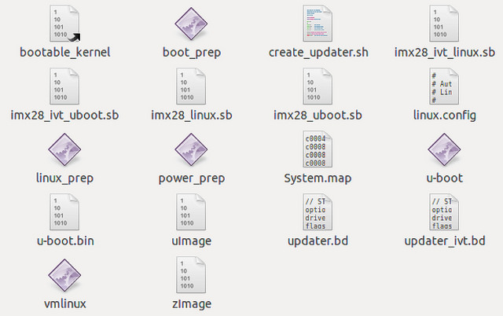

i.MX28-Linux移植
1-3步均为未成功的例子，可自行忽略从第4步开始
1.确定开发环境为Ubuntu-10.04
2.更新软件源
1 | $ sudo gedit /etc/apt/sources.list |
在弹出的文本框中将原始内容全部清空，修改成下面的旧源，保存并退出1
2
3
4
5
6
7
8
9
10deb http://old-releases.ubuntu.com/ubuntu/ natty main restricted universe multiverse
deb http://old-releases.ubuntu.com/ubuntu/ natty-security main restricted universe multiverse
deb http://old-releases.ubuntu.com/ubuntu/ natty-updates main restricted universe multiverse
deb http://old-releases.ubuntu.com/ubuntu/ natty-proposed main restricted universe multiverse
deb http://old-releases.ubuntu.com/ubuntu/ natty-backports main restricted universe multiverse
deb-src http://old-releases.ubuntu.com/ubuntu/ natty main restricted universe multiverse
deb-src http://old-releases.ubuntu.com/ubuntu/ natty-security main restricted universe multiverse
deb-src http://old-releases.ubuntu.com/ubuntu/ natty-updates main restricted universe multiverse
deb-src http://old-releases.ubuntu.com/ubuntu/ natty-proposed main restricted universe multiverse
deb-src http://old-releases.ubuntu.com/ubuntu/ natty-backports main restricted universe multiverse
更新源1
$ sudo apt-get update
3.根据Freescale官方手册MX28_EVK_Linux_User_Guide.pdf步骤安装LTIB
Install the LTIB package not as root:
1 | $ tar zxf <ltib_release>.tar.gz |
Build LTIB:
1 | $ cd <your LTIB directory> |
错误提示：
1 | ------------------------------------------------------------------------------ |
解决办法：
根据Freescale官方手册Setting_Up_LTIB_Host_on_Ubuntu_9_04.pdf
Install packages needed by LTIB1
2
3
4
5
6
7
8
9
10
11
12
13
14
15
16
17
18
19
20
21
# Install packages needed by LTIB
$ sudo aptitude -y install gettext libgtk2.0-dev rpm bison m4 libfreetype6-dev
$ sudo aptitude -y install libdbus-glib-1-dev liborbit2-dev intltool
$ sudo aptitude -y install ccache ncurses-dev zlib1g zlib1g-dev gcc g++ libtool
$ sudo aptitude -y install uuid-dev liblzo2-dev
$ sudo aptitude -y install tcl dpkg
# Packages required for 64-bit Ubuntu
# Do "uname -a" and see if the word "x86_64" shows up.
if uname -a|grep -sq 'x86_64'; then
sudo aptitude -y install ia32-libs libc6-dev-i386 lib32z1
fi
# The following recommended for Linux development.
# They are not required by LTIB.
$ sudo aptitude -y install gparted emacs22-nox openssh-server
$ sudo aptitude -y install nfs-common nfs-kernel-server lintian
$ sudo aptitude -y install git-core git-doc git-email git-gui gitk
$ sudo aptitude -y install diffstat indent tofrodos fakeroot doxygen uboot-mkimage
$ sudo aptitude -y install sendmail mailutils meld atftpd sharutils
$ sudo aptitude -y install manpages-dev manpages-posix manpages-posix-dev linux-doc
$ sudo aptitude -y install vnc4server xvnc4viewer
解决完上面的错误，继续执行1
$ ./ltib
错误提示：1
2
3
4
5
6
7
8
9
10
11
12
13
14
15
16
17
18
19
20
21
22
23
24
25
26
27
28
29
30
31------------------------------------------------------------------------------
I ran the command: sudo -S -l which returned:
[sudo] password for ethan: Sorry, try again.
[sudo] password for ethan: Sorry, try again.
[sudo] password for ethan: Sorry, try again.
sudo: 3 incorrect password attempts
This means you don't have sudo permission to execute rpm commands as root
without a password. This is needed for this build script to operate correctly.
To configure this, as root using the command "/usr/sbin/visudo",
and add the following line in the User privilege section:
ethan ALL = NOPASSWD: /usr/bin/rpm, /opt/freescale/ltib/usr/bin/rpm
traceback:
main::check_sudo_setup:2467
main::host_checks:1413
main:554
Started: Tue May 31 22:25:48 2016
Ended: Tue May 31 22:25:53 2016
Elapsed: 5 seconds
Build Failed
Exiting on error or interrupt
------------------------------------------------------------------------------
解决办法：
根据Freescale官方手册Setting_Up_LTIB_Host_on_Ubuntu_9_04.pdf
LTIB is executed as a regular user but requires root privileges during execution. To accommodate this, the sudoers file needs to be modified.
Run this command to edit the sudoers file:1
$ sudo visudo
Add the following line to the end of the sudoers file.1
%admin ALL = NOPASSWD: /usr/bin/rpm, /opt/freescale/ltib/usr/bin/rpm
解决完上面的错误，继续执行1
$ ./ltib
提示是接近一个小时的等待OvO
…
…
…
…
…
…
…
一个小时已经过去，然而并没有完成OvO
…
…
…
…
…
…
…
一个半小时已经过去，我要睡觉了OvO
起床发现还是不行，打开log文件发现
Updating lpp from local packages
错误提示：1
2
3
4
5
6
7
8
9
10
11
12
13
14
15
16
17
18
19
20
21
22
23
24
25
26
27
28
29
30
31
32
33
34------------------------------------------------------------------------------
Updating lpp from local packages
Processing platform: Host support packages
============================================
using /home/ethan/ltib/config/platform/host/ltib.preconfig
Processing: fake-provides
===========================
Processing: mkspooflinks
==========================
Build path taken because: directory build,
Cowardly refusing to clobber existing directory:
/opt/freescale/ltib/usr/src/rpm/BUILD/mkspooflinks-3.4
Remove this by hand if you really want to rebuild this package from scratch
Died at ./ltib line 1392.
traceback:
main::build_host_rpms:1392
main::host_checks:1447
main:554
Started: Thu Jun 23 18:48:59 2016
Ended: Thu Jun 23 18:49:00 2016
Elapsed: 1 seconds
These packages failed to build:
mkspooflinks
Build Failed
------------------------------------------------------------------------------
解决办法：
oh，跟我预想一样，安装在Mac共享文件夹下是不行的
换到Ubuntu本地，继续执行1
$ ./ltib
错误提示：1
2
3
4
5
6
7
8
9
10
11
12
13
14
15
16
17
18
19
20
21
22
23
24
25------------------------------------------------------------------------------
Processing: mtd-utils
=======================
Build path taken because: no prebuilt rpm,
Try mtd-utils-1.5.0.tar.gz.md5 from the GPP
http://bitshrine.org/gpp/mtd-utils-1.5.0.tar.gz.md5:
19:05:31 ERROR 404: Not Found.
Try mtd-utils-1.5.0.tar.gz from the GPP
http://bitshrine.org/gpp/mtd-utils-1.5.0.tar.gz:
19:05:31 ERROR 404: Not Found.
Can't get: mtd-utils-1.5.0.tar.gz at ./ltib line 802.
Died at ./ltib line 1392.
traceback:
main::build_host_rpms:1392
main::host_checks:1447
main:554
Started: Thu Jun 23 18:58:07 2016
Ended: Thu Jun 23 19:05:31 2016
Elapsed: 444 seconds
These packages failed to build:
mtd-utils
------------------------------------------------------------------------------
解决办法：
初步断定是源不行了，经过一天的摸索，替换源什么的都试了，过程中太多包找不到了，后来偶然发现下载的L2.6.35_1.1.0_130130_source里面有pkgs，也是醉了…原来还是共享文件夹的问题
删除opt/freescale文件夹
L2.6.35_1.1.0_130130_source拷贝到Ubuntu下，重新执行1
2$ ./<ltib_release>/install
$ ./ltib
Select the platform as “Freescale iMX reference boards” and exit after saving the changes. In the next menu, select “mx28” as platform type and select a package profile. Profiles min, test, and fsl gnome have been tested. Exit after saving changes.
这里gcc需要选择4.4.4的版本
错误提示：1
2
3
4
5
6
7
8
9
10
11
12
13
14
15
16
17
18
19
20
21
22
23
24
25
26
27
28
29
30
31
32
33
34
35
36
37
38
39
40
41
42
43
44
45
46
47
48
49
50
51
52
53
54
55
56
57
58
59
60
61------------------------------------------------------------------------------
Processing platform: Freescale iMX28 Based Boards
===================================================
using config/platform/imx/.config
Processing: fake-provides
===========================
Processing: u-boot
====================
Build path taken because: directory build, no prebuilt rpm,
scbuild/scdeploy already unpacked package
Processing: u-boot
====================
Build path taken because: directory build, build key set, no prebuilt rpm,
rpmbuild --dbpath /home/ethan/ltib/rootfs//var/lib/rpm --target arm --define '_unpackaged_files_terminate_build 0' --define '_target_cpu arm' --define '__strip strip' --define '_topdir /home/ethan/ltib/rpm' --define '_prefix /usr' --define '_tmppath /home/ethan/ltib/tmp' --define '_rpmdir /home/ethan/ltib/rpm/RPMS' --define '_mandir /usr/share/man' --define '_sysconfdir /etc' --define '_localstatedir /var' -bc --short-circuit /home/ethan/ltib/tmp/u-boot.spec
Building target platforms: arm
Building for target arm
Executing(%build): /bin/sh -e /home/ethan/ltib/tmp/rpm-tmp.93639
+ umask 022
+ cd /home/ethan/ltib/rpm/BUILD
+ cd u-boot-2009.08
+ : mx28_evk_config
+ eval echo
+ echo
+ PKG_U_BOOT_PATH_PRECONFIG=
+ SRC_DIR=/home/ethan/ltib/rpm/BUILD/u-boot-2009.08
+ BUILD_DIR=/home/ethan/ltib/rpm/BUILD/u-boot-2009.08
+ [ /home/ethan/ltib/rpm/BUILD/u-boot-2009.08 != /home/ethan/ltib/rpm/BUILD/u-boot-2009.08 ]
+ cd /home/ethan/ltib/rpm/BUILD/u-boot-2009.08
+ [ -n ]
+ make HOSTCC=ccache /usr/bin/gcc -B/usr/bin/ CROSS_COMPILE=arm-none-linux-gnueabi- O=/home/ethan/ltib/rpm/BUILD/u-boot-2009.08 mx28_evk_config
make: *** No rule to make target `mx28_evk_config'. Stop.
error: Bad exit status from /home/ethan/ltib/tmp/rpm-tmp.93639 (%build)
RPM build errors:
Bad exit status from /home/ethan/ltib/tmp/rpm-tmp.93639 (%build)
Build time for u-boot: 0 seconds
Failed building u-boot
f_buildrpms() returned an error, exiting
traceback:
main:572
Started: Sun Jul 3 01:34:21 2016
Ended: Sun Jul 3 01:35:33 2016
Elapsed: 72 seconds
These packages failed to build:
u-boot
Build Failed
Exiting on error or interrupt
------------------------------------------------------------------------------
解决办法
nxp的论坛里面给出了解决方法，由于我重新在12.04上搭建环境，所以没有尝试
https://community.nxp.com/thread/303737
4.重新确定开发环境为Ubuntu-12.04
5.根据 https://community.nxp.com/docs/DOC-98909 进行配置
安装需要的包
1 | $ sudo apt-get update |
解压安装LTIB
1 | $ cd ~ |
安装12.04补丁0001_make_L2.6.35_1.1.0_130130_compile_on_ubuntu_12.04_64bit_OS.patch
解压拷贝到~/ltib下1
2$ cd ~/ltib
$ git apply 0001_make_L2.6.35_1.1.0_130130_compile_on_ubuntu_12.04_64bit_OS.patch
预配置然后安装
这里gcc需要选择4.4.4的版本
1 | $ cd ~/ltib |
6.等待半小时左右，提示以下内容就成功了
1 | ------------------------------------------------------------------------------ |
在~/ltib/rootfs/boot/下面会生成以下固件
